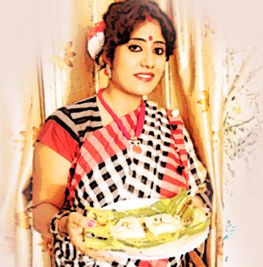

Recipes...
মিলি দাস একটি নাম যার কলম এবং খুন্তি একই সঙ্গে চলছে সমান গতিতে।শব্দ যদি শিল্প হয় তবে রান্না কেন নয়।আমরা বলি মেয়েরা দশভুজা সে নিদর্শন তিনি নিজে।কবিতার পাশাপাশি রান্নাকেও একটি শিল্প করে এগিয়ে চলেছেন অনেকটা পথ।কখনো তাঁকে দেখি টিভির পর্দায়,আবার কখনো খবরের কাগজের পাতায়।কখনো দেখি মাইক্রোফোন হাতে মঞ্চে কবিতা বলছেন আবার কখনো দেখি বিভিন্ন টিভি চ্যানেলে খুন্তি হাতে রান্না করছেন।তাঁর নিত্য নতুন ইনোভেটিভ রান্নার জন্য জাতীয় এবং অন্তর্জাতিক স্তরে তিনি পেয়েছেন বহু শিরোপা।
সুন্দর করে শব্দ সাজিয়ে যেমন কবিতা হয়ে যায় এবং সেই কবিতা যেমন প্রশান্তি এনে দেয় মনে,পাঁচ মিশেলী উপকরণ দিয়ে দিয়ে অপূর্ব সুস্বাদু খাদ্য প্রণালী প্রস্তুত করে সুন্দর করে সাজিয়ে পরিবেশন করাটাকেও তিনি শিল্প বলেই মনে করেন।টিভি ,ম্যাগাজিন, খবরের কাগজ শুধু নয়,উত্তর থেকে দক্ষিণ,
যোধপুর থেকে সোনার পুর,তাঁকে আমরা নিয়মিত দেখতে পাই রান্না প্রতিযোগিতার বিচারকের আসনে।মিলি দাস একটি নাম এবং তিনি নিজেই তাঁর আপন গুনে সকলের দেখা একটি নতুন অধ্যায়।
